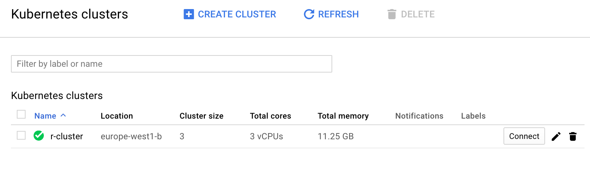
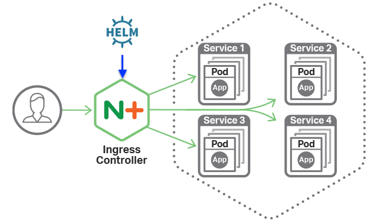
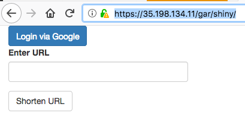
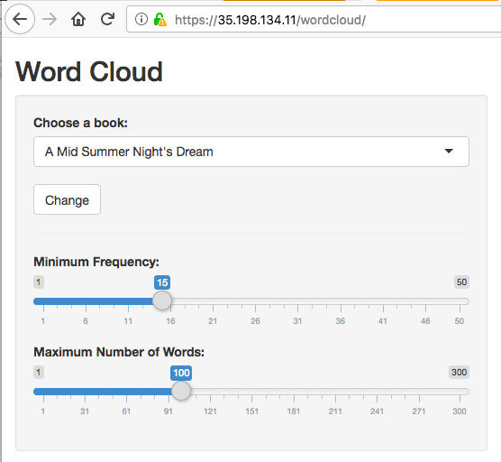
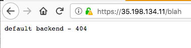
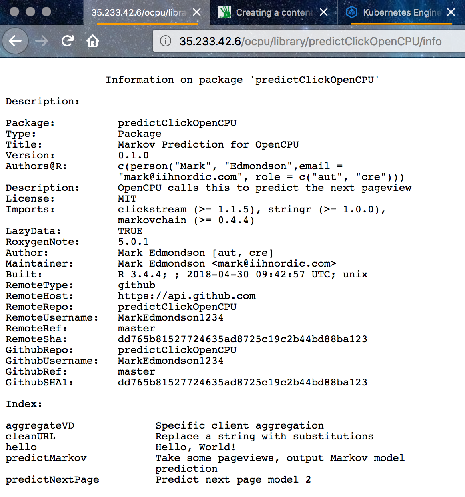
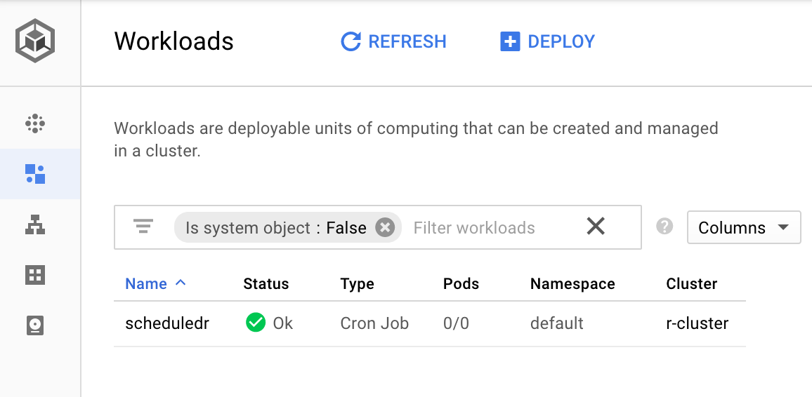

Why run R on Kubernetes?
Kubernetes is a free and open-source utility to run jobs within a computer cluster. It abstracts away the servers the jobs are running on so you need only worry about the code to run. It has features such as scheduling, auto-scaling, and auto-healing to replace nodes if they breakdown.
If you only need to run R on a single machine, then its probably a bit OTT to use Kubernetes, but if you are starting to work with multiple Docker containers and/or VMs it gets more and more attractive to have a way to easily orchestrate them.
Kubernetes works via Docker containers, so if you are already familiar with using Docker for abstracting away code environments, it should be a short step up to abstracting away the computers those Docker containers run upon.
R is a good mix with Docker since it provides a way to have stable production environments in a landscape of shifting dependencies given R’s fast changing open source foundation. There is a growing ecosystem to help R users with Docker including the Rocker Project, containerit and harbor, and Rhys Jackson has also crafted a Kubernetes client for R in googleKubernetesR.
If your R scripts are deployed in Docker containers, you can use them in Kubernetes. This includes applications such as R powered APIs using OpenCPU or plumber, Shiny apps, batch R jobs that can scale horizontally over many CPUs, or scheduled analysis.
What you gain is reliable, flexible, production ready R applications, that will scale, run on many cloud providers including Google, and once set up easy to deploy - in most cases pushing to GitHub can be the trigger to serve your new code.
Alternatives
This article deploys to Google Kubernetes Engine (GKE), but there are many other methods to cover some of Kubernetes functionality, that you may prefer.
- Kubernetes itself can run on all the cloud providers aside Google Cloud Platform, as well as your own servers.
- Google App Engine Flexible is a more managed platform that takes care of some details, but you lose control of others. I wrote about this previously for running R APIs and a demo is in this GitHub repo.
- Docker Compose is an equivalent service that only runs on one host, Docker Swarm runs on multiple hosts and most comparible to Kubernetes.
- Azure Container Service is a more managed Kubernetes platform than GKE
Regardless which one you use, the principles are similar in that they all build on Docker containers, and one of the advantages of Kubernetes is you can move to other providers a lot more easily, since Docker/Kubernetes is fast becoming the standard for cloud developments.
Setup background
The below is a setup I have used for the above applications, and may be able to help if you are looking for similar functionality.
I ran into several gotchas whilst developing it, so hopefully it will help you avoid some of those. Most vexing for me was finding a way to serve different R scripts on one kubernetes cluster on different URL paths (e.g. /r-script1, /shinyapp2, /r-api-3, etc) - many thanks to Rhys’ help with that. The answer was that (at the time of writing) the default Google Kubernetes Engine doesn’t support rewriting URLs, so instead its better to install another application on your cluster to take care of the above URL serving (termed ingress fanout), namely using nginx ingress instead of the default GKE ingress.
This article then demonstrates:
- Creating a Kubernetes cluster for your R applications
- Installing Helm (and Tiller) to aid with a nginx ingress installation
- Deploying R containers, with examples for Shiny, an R API and an R scheduled script
- Serving up those R containers on nice URLs
References
These were used to help develop the below:
- Setting up HTTP load balancing with Ingress Google tutorial
- Ingress with nginx modified with this
- My StackOverflow question on http load balancing
- Kubernetes reference documentation
- Kubernetes with nginx, TLS and LetsEncrypt
Part 1 - Creating an R cluster
Follow the setup steps to authenticate with gcloud and kuberctl then create your cluster via:
gcloud container clusters create r-cluster --num-nodes=3
…or if using googleKubernetesR :
library(googleKubernetesR)
## create a 3 node cluster called r-cluster with defaults
createCluster(projectId = gcp_get_project(), zone = "europe-west3-b")
You’ll need to wait a bit as it provisions all the VMs.
Most of the below will use the terminal/shell for working rather than R, but in the future a lot of this may be possible via googleKubernetesR within an R session.
Set up your shell to get the credentials for Kuberctl:
gcloud container clusters get-credentials r-cluster
And we are all set to start setting up this cluster for R jobs!
Here is a screenshot from the web UI of what it should look like:

Part 2 - Install the nginx ingress controller
The first recommended setup is to enable an ingress controller.

Image from nginx
This is a pod that directs internet traffic to the right R container we set up later.
We install the ingress controller via Helm and its counterpart Tiller on the cluster.
Helm is a package manager for Kubernetes.
You can skip installing Helm/Tiller/ingress controller if you don’t need to have R apps on a URL, for instance if its just scheduled cron jobs you want on your cluster, but it is recommended if you want to serve up APIs and Shiny.
The below is mostly copied straight from Bitnami’s article.
Install Helm
The below assumes RBAC rules are enabled, which is true from Kubernetes version 1.8 onwards.
curl -o get_helm.sh https://raw.githubusercontent.com/kubernetes/helm/master/scripts/get
chmod +x get_helm.sh
./get_helm.sh
Install Tiller on cluster
Step 1: Create the Tiller service account
Create a tiller-serviceaccount.yaml file using kubectl:
kubectl create serviceaccount tiller --namespace kube-system
Step 2: Bind the Tiller service account to the cluster-admin role
Create a tiller-clusterrolebinding.yaml file with the following contents:
kind: ClusterRoleBinding
apiVersion: rbac.authorization.k8s.io/v1beta1
metadata:
name: tiller-clusterrolebinding
subjects:
- kind: ServiceAccount
name: tiller
namespace: kube-system
roleRef:
kind: ClusterRole
name: cluster-admin
apiGroup: ""
Deploy the ClusterRoleBinding:
kubectl create -f tiller-clusterrolebinding.yaml
Step 3: Update the existing Tiller deployment
Update the existing tiller-deploy deployment with the Service Account you created earlier:
helm init --service-account tiller --upgrade
Wait a few seconds for the Tiller server to be redeployed.
Step 4: Test the new Helm
All being well, you should be able to execute this command without errors:
helm ls
And that’s it! You have configured Helm in your Kubernetes cluster.
Step 5: Deploy ngnix Ingress Controller
Now you can deploy the nginx ingress controller using Helm to take care of details:
helm install --name nginx-ingress stable/nginx-ingress --set rbac.create=true
You should see your IP when you issue:
kubectl get service nginx-ingress-controller
#> NAME CLUSTER-IP EXTERNAL-IP PORT(S) AGE
#> nginx-ingress-controller 10.7.253.89 <pending> 80:32713/TCP,443:31061/TCP 23s
Part 3 - Deploying R Workloads!
Now the cluster is all setup for you to deploy your R containers. You can install other containers in any other language too, such as normal HTML webapps or utilties.
We deploy them using the command kubectl run, and go through some examples below.
A: Shiny apps
Below we deploy two Shiny apps, in this case the googleAuthR demo app that is configured to run on port 3838, in a /shiny/ folder, and a wordcloud Shiny app by Flavio Barros that has had its Dockerfile configured to run on port 80 in the root folder, to demonstrate how to handle different Docker deployments.
kubectl run shiny1 --image gcr.io/gcer-public/shiny-googleauthrdemo:latest --port 3838
kubectl run shiny2 --image=flaviobarros/shiny-wordcloud --port=80
Expose containers as node ports
At the moment we are only selecting which services the cluster will run - we won’t be able to see them yet until we expose the apps and configure the ingress rules
These will be pointed to via the nginx ingress controller.
We first open up their ports as nodeports, so the ingress can see them:
kubectl expose deployment shiny1 --target-port=3838 --type=NodePort
kubectl expose deployment shiny2 --target-port=80 --type=NodePort
Create Ingress with ngninx
This lets you be able to call the different services from one ip address.
Save this as r-ingress-nginx.yaml
apiVersion: extensions/v1beta1
kind: Ingress
metadata:
name: r-ingress-nginx
annotations:
kubernetes.io/ingress.class: nginx
nginx.ingress.kubernetes.io/rewrite-target: /
nginx.ingress.kubernetes.io/ssl-redirect: "false"
spec:
rules:
- http:
paths:
- path: /wordcloud/
# app deployed to /wordcloud/
backend:
serviceName: shiny2
servicePort: 80
- path: /gar/
# app deployed to /gar/shiny/
backend:
serviceName: shiny1
servicePort: 3838
Deploy via
kubectl apply -f r-ingress-nginx.yaml
Verify and keep refreshing until it has an ip address assigned in the ADDRESS field (5mins)
kubectl get ingress r-ingress-nginx
See your deployed containers
The Nginx ingress controller takes care of any URL path not covered in the r-ingress-nginx ingress. By default this should give a default backend - 404 message.
/gar/shiny/is served by the googleAuthR demo app./gar/covers the standard Shiny welcome screen, and/shiny/is the folder that is configured in the Dockerfile/wordcloud/holds the Wordcloud Shiny app. In this case, the Shiny app is configured to appear in the root directory of the/wordcloud/URL.
Here are some screenshots:



Note it matters where you put the app in your Dockerfile. The nginx.ingress.kubernetes.io/rewrite-target: / line in the ingress lets you specify a URL that is relative to your specified URLs.
If you want to have your app served on the absolute URL specified in the Dockerfile, see below for a no-redirect version.
No redirects
Without redirects work too, but the Shiny app needs to have the correct URL path configured in its Docker that matches the URLs you are specifying in the Ingress e.g. for our examples as the googleAuthR demo is in path /shiny/ and the Wordcloud demo in the root /, the Ingress rules need to match those. Beware clashes where two Shiny apps have configured to the same URL path, e.g. root /
Save this as r-ingress-nginx-noredirect.yaml
apiVersion: extensions/v1beta1
kind: Ingress
metadata:
name: r-ingress-nginx
annotations:
kubernetes.io/ingress.class: nginx
#nginx.ingress.kubernetes.io/rewrite-target: / # not used in this example
nginx.ingress.kubernetes.io/ssl-redirect: "false"
spec:
rules:
- http:
paths:
- path: /
backend:
serviceName: shiny2
servicePort: 80
- path: /shiny/
backend:
serviceName: shiny1
servicePort: 3838
Deploy via
kubectl apply -f r-ingress-nginx-noredirect.yaml
Again, the Nginx ingress controller takes care of any URL path not covered in the r-ingress-nginx ingress.
However now:
/shiny/is served by the googleAuthR demo app./holds the Wordcloud Shiny app.
B1: R APIs - plumber
edit 8th Feb, 2019 - seems most people are using plumber these days for R APIs, so I’ve updated to include an example of that as well as OpenCPU
Kubernetes is well suited to serving R APIs as they can auto-scale to demand, covering peaks and troughs in demand.
Plumber has its own Docker container at tresletech/plumber so you can use that as a basis for your own deployments.
An example below deploys the demo from plumber’s website.
Say you have an R script that uses plumber such as below:
#* Echo back the input
#* @param msg The message to echo
#* @get /api/echo
function(msg=""){
list(msg = paste0("The message is: '", msg, "'"))
}
#* Plot a histogram
#* @png
#* @get /api/plot
function(){
rand <- rnorm(100)
hist(rand)
}
#* Return the sum of two numbers
#* @param a The first number to add
#* @param b The second number to add
#* @post /api/sum
function(a, b){
as.numeric(a) + as.numeric(b)
}
You could include your own libraries etc as well, but in that case make sure to install them in the Dockerfile as well so they are available in its environment.
A Dockerfile can be very simple - it only uses the premade plumber Docker image then copies in your script (and perhaps installs any dependencies you want). The CMD line specifies which R script to use in plumber.
FROM trestletech/plumber
WORKDIR /payload/
COPY [".","./"]
CMD ["api.R"]
The folder structure is arranged so the Dockerfile will pick up and copy in your plumber script when building:
|
|- Dockerfile
|- api.R
Deploy and build your Dockerfile so its available for Kubernetes. I use GitHub and Google Cloud Build to have it in a private repo, so thats its available at gcr.io/your-project/my-plumber. This means as I make changes to my plumber script and commit to GitHub, it will rebuild the image.
Now we want to deploy the image to Kubernetes:
kubectl run my-plumber --image gcr.io/your-project/my-plumber --port 8000
Expose the port as before:
kubectl expose deployment my-plumber --target-port=8000 --type=NodePort
And create the ingress so it can speak with the outside world:
apiVersion: extensions/v1beta1
kind: Ingress
metadata:
name: r-ingress-nginx
annotations:
kubernetes.io/ingress.class: nginx
#nginx.ingress.kubernetes.io/rewrite-target: /
nginx.ingress.kubernetes.io/ssl-redirect: "false"
spec:
rules:
- http:
paths:
- path: /api/
backend:
serviceName: my-plumber
servicePort: 8000
This assumes you have configured the ingress controller above
You can then call your plumber API. In the ingress above its configured to be within the ´/api/` folder, so all the plumber functions are relative to that. Assuming your public ip address is 1.2.3.4, this means you can use curl to test your API:
curl http://1.2.3.4/api/echo?msg="its alive!"
#> "The message is: its alive!"
B2: R APIs - OpenCPU
An alternative to plumber is using OpenCPU, which uses a package structure to construct R APIs.
A demo API is shown below, using openCPU for predicting website clicks, but the same principle applies if using plumber or another framework by swapping out the Dockerfile to serve the API on a port.
This assumes you have configured the ingress controller above
kubectl run opencpu-demo --image gcr.io/gcer-public/opencpu-demo:latest --port 8004
Expose the port as before:
kubectl expose deployment opencpu-demo --target-port=8004 --type=NodePort
Now we do another Ingress deployment for the R-API, in addition to the Shiny apps above.
Save the below as r-ingress-opencpu.yaml
apiVersion: extensions/v1beta1
kind: Ingress
metadata:
name: r-ingress-nginx-ocpu
annotations:
kubernetes.io/ingress.class: nginx
nginx.ingress.kubernetes.io/ssl-redirect: "false"
spec:
rules:
- http:
paths:
- path: /ocpu/
backend:
serviceName: opencpu-demo
servicePort: 8004
…and deploy via:
kubectl apply -f r-ingress-opencpu.yaml
Your ip address will be as shown as your ADDRESS when you issue:
kubectl get ingress r-ingress-nginx-ocpu
#> NAME HOSTS ADDRESS PORTS AGE
#> r-ingress-nginx-ocpu * 35.205.249.34 80 10m
Note no rewriting this time as OpenCPU takes care of itself on /ocpu/ folder.
Use your OpenCPU installation
Assuming your IP is 1.2.3.4; we can see the OpenCPU is installed via 1.2.3.4/ocpu/info and the test page at 1.2.3.4/ocpu/test/
For our example, the custom package uploaded is available at 1.2.3.4/ocpu/library/predictClickOpenCPU

We use the API for this package by creating a POST hit to API endpoint
1.2.3.4/ocpu/library/predictClickOpenCPU/R/predictMarkov/json
…with the parameter pageview_names=["/example/96","/example/213","/example/107"]
Constructing the above in the terminal with curl, we test the API is functioning:
curl --data 'pageview_names=["/example/96","/example/213","/example/107"]' http://35.233.42.6/ocpu/library/predictClickOpenCPU/R/predictMarkov/json
#> {
# "page": ["/example/251"],
# "probability": [0.5657]
#> }
Web API endpoints can also be used as webhooks, for instance to react and do something when something is pushed to GitHub for continuous integration purposes.
C: Scheduled R - Tasks via cronJobs
Kuberenetes has a special option for deploying scheduled tasks, called cronJobs.
When configuring your Dockerfile, you can choose so it runs entirely self-contained, perhaps calling an API and writing the result to a database. For each new job you can make a new Dockerfile and build them on something like build triggers.
In that case the Dockerfile should run with all configuration files included in the Docker build. One advantage of running on GKE is that the job can be authenticated with the same project via googleAuthR::gar_gce_auth() so will have access to Google Cloud Storage, BigQuery etc.
An alternative is to configure the Dockerfile to rely on a config file, and have that config file mounted as a volume in the pod - that isn’t covered here yet.
Creating an executable R Dockerfile
This is an example Dockerfile that installs dependencies and R packages, loads a local configuration file then runs a custom function when it is called upon by the cronJob:
FROM rocker/verse
MAINTAINER Mark Edmondson (r@sunholo.com)
# install R package dependencies
RUN apt-get update && apt-get install -y \
gcc gsl-bin libblas-dev \
## etc....
## clean up
&& apt-get clean \
&& rm -rf /var/lib/apt/lists/ \
&& rm -rf /tmp/downloaded_packages/ /tmp/*.rds
# any necessary environment arguments
ENV SECRET_ARG hellomum
# Install packages from CRAN and GitHub
RUN install2.r --error \
-r 'http://cran.rstudio.com' \
googleAuthR googleAnalyticsR bigQueryR \
&& Rscript -e "devtools::install_github('MarkEdmondson1234/youtubeAnalyticsR')" \
&& Rscript -e "devtools::install_github('yourprivate/customPackage')" \
## clean up
&& rm -rf /tmp/downloaded_packages/ /tmp/*.rds
# my_config.yaml is in same folder as Dockerfile
COPY my_config.yaml my_config.yaml
## this runs when this Docker container is called
CMD ["Rscript", "-e", "customPackage::do_something('my_config.yaml')"]
Running cronJobs
For cronJobs, specify the schedule argument, and we change the restart policy to only do so on failure.
kubectl run scheduled-r --schedule="23 4 * * *" --restart=OnFailure --image=gcr.io/xxxxxx/private_docker_image:latest
That is getting a bit complicated for the terminal , so I prefer to deploy via the file method:
apiVersion: batch/v1beta1
kind: CronJob
metadata:
name: scheduledr
spec:
schedule: "23 4 * * *"
jobTemplate:
spec:
template:
spec:
containers:
- name: my_image
image: gcr.io/xxxxxx/private_docker_image:latest
restartPolicy: OnFailure
Save the file as say cron-r.yaml and deploy via:
kubectl create -f ./cron-r.yaml
You should then see the job has been created via
kubectl get cronjob scheduledr
And in the Web UI under Workloads

Part 4 - Going further
This article turned into a lot more words than I intended, so I’ll stop now, but see below on some more things I could have written about:
Updating your cluster
Its a bit of configuration to get there, but once deployed since the services are running off Docker, and those in turn are built using build triggers that are from GitHub pushes, it means that changes to scripts can all be controlled via GitHub pushes and branches, which you are probably using anyway for version control.
When you change a configuration file and want to deploy, use kubectl apply instead of kubectl create to change the settings.
Its best practice to specify a dev and production branch to your GitHub Docker images, so you can safely test containers before you break your production.
Secrets and https / SSL configuration
Kubernetes supports more robust methods to guard your secrets that including them in the Dockerfiles - see here for proper treatment.
Related to that is serving over https. In this case I found Bitnami the easiest method to follow, using Helm again to configure TLS with LetsEncrypt and Kube-lego.
Auto scaling
Launching the cluster with these flags enables auto-scaling
gcloud container clusters create r-cluster --num-nodes=0 --enable-autoscaling --min-nodes=0 --max-nodes=3
On Google Kubernetes Engine this scales down to 0, which should be cheaper than running a few CPUs running 24⁄7, and you can configure when new nodes are launched such as when it hits 80% CPU.
Parallel tasks
For big parallel processing tasks, Kubernetes is an option that can launch as many CPUs you need.
However, you will need to configure your workload so that each service works on a different part of the data, so some form of central ledger is needed that keeps track of which rows on the database or files have been treated, and to remove them from the input files once completed.
A strategy to handle this is to use message brokers that specify which work needs to be done. An example of using a message broker is here.
And finally…
After all that, do remember to tear down your cluster and/or load balancers when finished with, as you are charged by minute of uptime per node. Most tutorials include this at the end - you can either delete in the web UI but to be complete here:
- Delete the Ingress: This deallocates the ephemeral external IP address and the load balancing resources associated to your application:
kubectl delete ingress your-ingress
- Delete the cluster: This deletes the compute nodes of your container cluster and other resources such as the Deployments in the cluster:
gcloud container clusters delete r-cluster
Summary
When working with Kubernetes documentation you can tell that it is a fast changing developing product, which can be a bit frustrating when looking for solutions, but I anticipate the APIs to settle down in the future.
This should hopefully serve as a good jumping off point for you to develop your own Kubernetes R cluster. Having got Kubernetes under my belt I now feel fully tooled up for deploying R (and other applications) at scale, and in an exciting and developing framework that should stand in good sted for a few years to come.